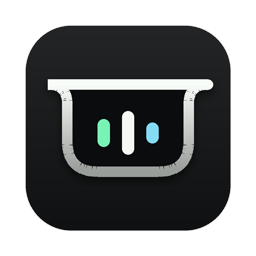

30 秒，看它怎么工作。
从多个窗口来回切，到只抬眼看一下。
平时安静，有事才开口。
它只有三种样子。不弹窗，不抢焦点，不打断你手上的事。
常驻
任务在跑的时候，它收在刘海两侧。左边是正在工作的 Agent，右边的活动条只说明“还在动”，不代表进度百分比；数字是进行中的任务数。
提醒
任务开始、需要你确认、或者一轮结束时，它横向展开约 10 秒，告诉你是哪件事、现在是什么状态，然后自己收回去。
总览
鼠标在顶部停 0.2 秒，就能看到最近 24 小时的任务：谁在等你、谁还在跑、谁已经结束，以及已经返回的步骤。点“打开应用”回到对应的 Agent 处理，移开鼠标就收起。
以上画面是网页还原的演示，任务内容为演示数据。你看到的会是自己的任务。
只看状态，不碰内容。
Agent 灵动岛完全在你的 Mac 上运行。不联网，不上传，不调用任何模型 API，也不需要 API Key。
它会知道
- 哪个 Agent 在工作
- 一轮任务什么时候开始、等待、结束或失败
- 步骤的类别，比如读取文件、执行命令
- 任务标题和会话线索，用来帮你认出是哪件事
它不会碰
- 你的提示词和聊天正文
- 工具的输入和输出内容
- 账号、凭据和 API Key
- 你的文件内容
接入每个 Agent 之前，它会先告诉你要改哪个配置文件。你确认后才写入，并且留一份原文件备份；随时可以卸载接入。
默认只观察，不替你做决定。唯一的例外是 Claude Code：你可以手动开启单次审批，每次只放行这一次，其他 Agent 的确认都回到原应用处理。
现在能接入的 Agent
Alpha 版先从这几个开始。状态如实标注，不夸大。
- Codex 通过生命周期 Hook 接入 已实机验证
- Claude Code 通过生命周期 Hook 接入，可选开启单次审批 已实机验证
- Work Buddy 通过生命周期 Hook 接入 已实机验证
- 豆包 只读本机的 Agent 模式记录，普通聊天看不到 只读
- Claude 聊天应用 需要辅助功能权限，暂不在 Alpha 的保证范围内 实验性
应用里的图标读取自你 Mac 上安装的 Agent 本身；没安装的会显示通用占位。

下载 Agent 灵动岛
安装包正在准备，发布后这里可以直接下载。
- 拖进“应用程序”打开下载的 .dmg，把 Agent 灵动岛拖进“应用程序”文件夹。
- 第一次打开如果系统提示无法打开，到“系统设置 › 隐私与安全性”，点“仍要打开”。
- 接入你的 Agent点菜单栏里的灵动岛图标，选“接入与验证…”，只勾选你在用的 Agent。
- 跑一轮试试在原应用里发起一次真实任务，回来看看灵动岛有没有亮起来。
为什么会有第二步：Alpha 版还没有经过 Apple 公证，macOS 会在第一次打开时多问一句。想自己从源码构建，可以在 GitHub 查看。
网站会统计访问次数、主要按钮点击、安装包下载请求和国家/地区汇总，保留 90 天。统计不使用 Cookie，不保存原始 IP，也不采集应用里的任务或对话内容。下载请求不代表下载完成；Agent 灵动岛应用本身不联网。浏览器开启“不跟踪”或全球隐私控制时，不记录网页行为。